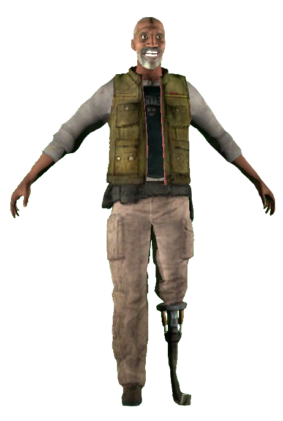
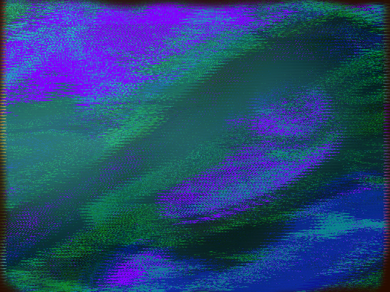
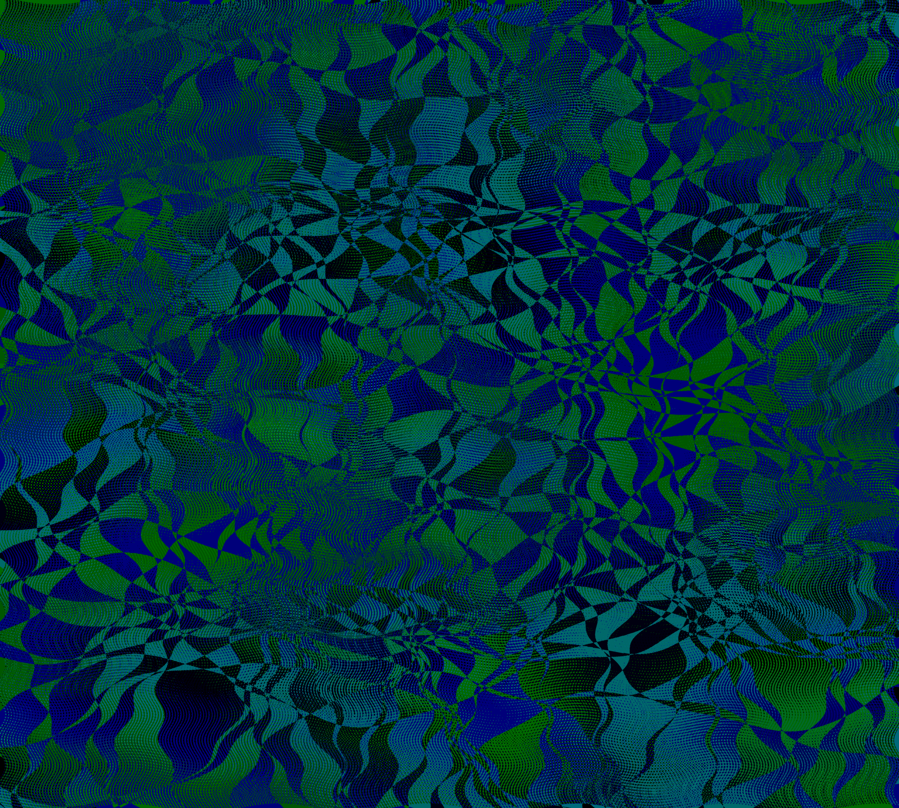
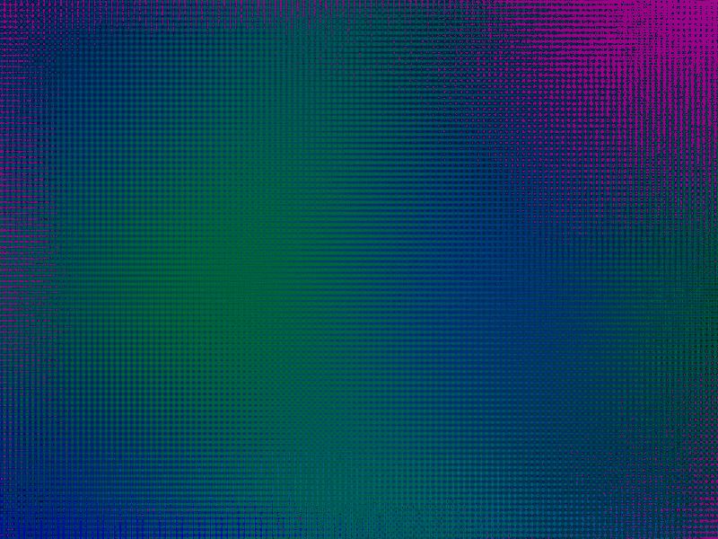
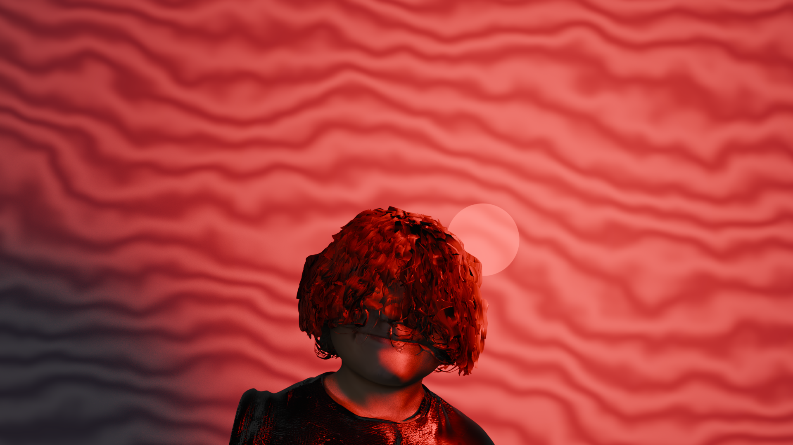
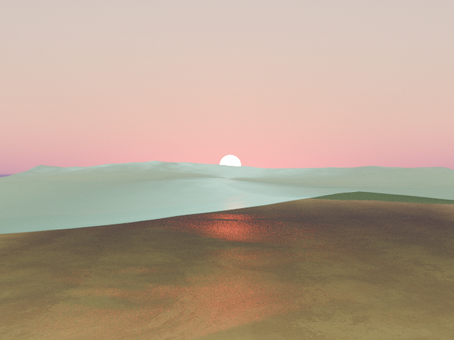

gallery
viewing project archive
random artwork, some 2d, some renders








more projects and music coming eventually..
viewing project archive
random artwork, some 2d, some renders






more projects and music coming eventually..